Econometrics I
TA Christian Alemán
Session 3: Friday 4, February 2022
Activity 1: Random Sampling
Simulate a Population
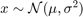
% Housekeeping clear all close all clc % % Begin Script rng(1234) % Set seed for reproductivity % % Simulate the Universe % Plot options par.num_bins = 50; opt.norm_type = {'count','pdf'}; % Normalization type opt.sel_norm = 2; % 1: count 2: pdf par.N = 1000000; % Our Universe par.NS = 50; % Size of our sample par.MS = 1000; % Number of samples par.sigma = [0.1,0.5]; par.mu = 4; vars.x_vec = NaN(par.N,2); vars.x_sample = NaN(par.NS,par.MS,2); vars.x_mean = NaN(par.MS,2); vars.y_sample = NaN(par.NS,par.MS,2); vars.y_mean = NaN(1,par.MS,2); for i = 1:2
vars.x_vec(:,i) = par.mu + par.sigma(i).*randn(par.N,1);
With Loop: Generate NS number of samples from the universe.
for j = 1:par.MS vars.x_sample(:,j,i) = randsample(vars.x_vec(:,i),par.NS); vars.x_mean(j,i) = mean(vars.x_sample(:,j,i)); end
Without a loop Purely for Montecarlo Purposes:
vars.y_sample(:,:,i) = par.mu + par.sigma(i).*randn(par.NS,par.MS);
vars.y_mean(1,:,i) = mean(vars.y_sample(:,:,i),1);
end
Plot the Distribution of Means and the true mean
figure(1) subplot(2,1,1) histogram(vars.x_mean(:,1),par.num_bins,'Normalization',opt.norm_type{opt.sel_norm}); xline(par.mu,'g-','linewidth',2) xline(mean(vars.x_mean(:,1)),'r-','linewidth',2) title(['$\sigma^{2} = $',num2str(par.sigma(1)^2)],'interpreter','latex','fontsize',17) xlim([3.7,4.3]) legend({'Dist of the Mean','True','Estimated'}) ylabel(opt.norm_type{opt.sel_norm}) subplot(2,1,2) histogram(vars.x_mean(:,2),par.num_bins,'Normalization',opt.norm_type{opt.sel_norm}); xline(par.mu,'g-','linewidth',2) xline(mean(vars.x_mean(:,2)),'r-','linewidth',2) title(['$\sigma^{2} = $',num2str(par.sigma(2)^2)],'interpreter','latex','fontsize',17) xlim([3.7,4.3]) legend({'Dist of the Mean','True','Estimated'}) ylabel(opt.norm_type{opt.sel_norm})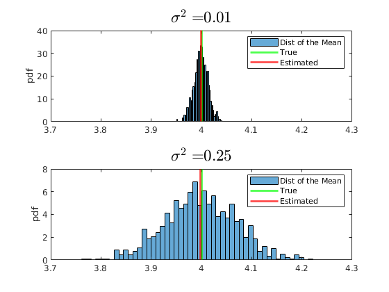
Do the same for the generalized pareto:
rng(567) % Set seed for reproductivity par.sigma = 0.1; % Scale par.k = 0.8; % Index, shape par.theta = 0; % Threshold, location vars.x_vec = gprnd(par.k,par.sigma,par.theta,par.N,1); par.MS = 2000; par.NS = 200; % Size of our sample par.mu_A = par.theta+(2^(par.k)-1).*par.sigma./par.k; par.mu_B = par.theta+par.sigma./(1-par.k); % Initialize Matrix Holders vars.x_sample = NaN(par.NS,par.MS); vars.x_mean = NaN(1,par.MS); vars.x_median = NaN(1,par.MS); % Plot the histogram of the distribution of the Universe I = vars.x_vec>4; figure(2) hold on histogram(vars.x_vec(not(I)),par.num_bins,'Normalization',opt.norm_type{opt.sel_norm}); legend('Distribution of the Universe') ylabel(opt.norm_type{opt.sel_norm}) for j = 1:par.MS vars.x_sample(:,j) = randsample(vars.x_vec,par.NS); vars.x_median(j) = median(vars.x_sample(:,j)); vars.x_mean(j) = mean(vars.x_sample(:,j)); end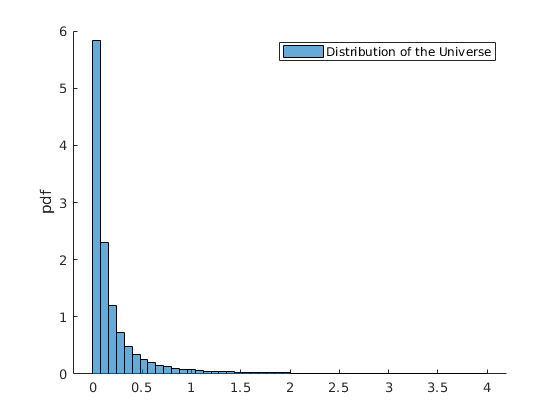
Plot the Distribution of Medians
figure(3) %histogram(vars.x_mean,par.num_bins,'Normalization',opt.norm_type{opt.sel_norm}); %xline(mean(vars.x_mean),'r-','linewidth',2) %xline(par.mu_B,'g-','linewidth',2) histogram(vars.x_median,par.num_bins,'Normalization',opt.norm_type{opt.sel_norm}); xline(par.mu_A,'g-','linewidth',2) xline(mean(vars.x_median),'r-','linewidth',2) legend({'Dist of the Median','True','Estimated'}) ylabel(opt.norm_type{opt.sel_norm})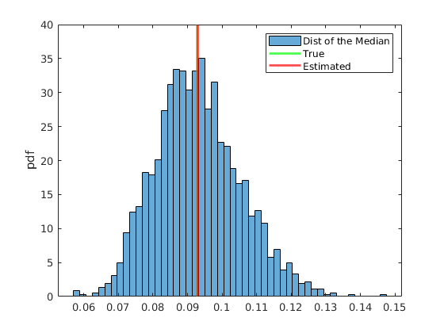
Activity 2: Backing out Residuals
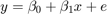 Where 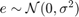
% rng(4567) par.n = 500; % Simulate x par.mean_x1 = 4; par.variance_x = 2; par.variance_e = [0.1,0.3,0.8]; x = par.mean_x1 +sqrt(par.variance_x).*randn(par.n,1); % Model coefficients: par.beta0 = 2; par.beta1 = 0.5; % Simulate error err = NaN(par.n,3); y = NaN(par.n,3); for i = 1:3 err(:,i) = 0 + sqrt(par.variance_e(i)).*randn(par.n,1); % Simulate Data Generating Process: y(:,i) = par.beta0 + par.beta1.*x +err(:,i); % Estimate the OLS and back out the Residuals if i ==1 vars_1 = ols_esti(y(:,i),[ones(par.n,1) x]); elseif i ==2 vars_2 = ols_esti(y(:,i),[ones(par.n,1) x]); else vars_3 = ols_esti(y(:,i),[ones(par.n,1) x]); end end figure(4) hold on grid on plot(x,y(:,1),'kx') plot(x,vars_1.y_hat,'b-','linewidth',1.1) ylim([0,8]) xlabel('$x$','fontsize',17,'interpreter','latex') ylabel('$y$','fontsize',17,'interpreter','latex') title(['$\sigma^{2} = $ ',num2str(par.variance_e(1))],'interpreter','latex','fontsize',17) figure(5) hold on grid on plot(x,y(:,2),'kx') plot(x,vars_2.y_hat,'b-','linewidth',1.1) ylim([0,8]) xlabel('$x$','fontsize',17,'interpreter','latex') ylabel('$y$','fontsize',17,'interpreter','latex') title(['$\sigma^{2} = $',num2str(par.variance_e(2))],'interpreter','latex','fontsize',17) figure(6) hold on grid on plot(x,y(:,3),'kx') plot(x,vars_3.y_hat,'b-','linewidth',1.1) ylim([0,8]) xlabel('$x$','fontsize',17,'interpreter','latex') ylabel('$y$','fontsize',17,'interpreter','latex') title(['$\sigma^{2} = $',num2str(par.variance_e(3))],'interpreter','latex','fontsize',17)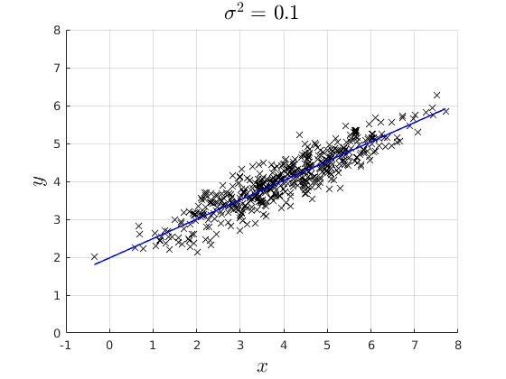 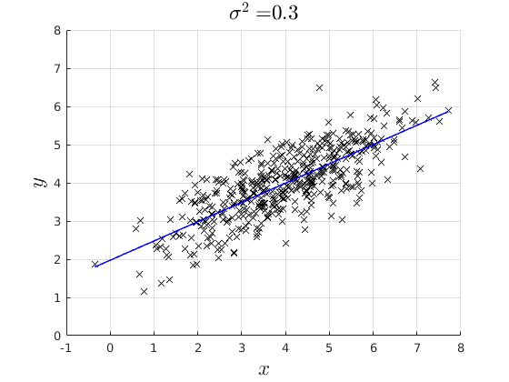

Plot the distrobution of the residuals
figure(7) subplot(3,1,1) hold on grid on histogram(vars_1.e_hat,par.num_bins,'Normalization',opt.norm_type{opt.sel_norm}); ylabel('Density','fontsize',17,'interpreter','latex') xlabel('$\hat{e}$','fontsize',17,'interpreter','latex') title(['$\sigma^{2}$ = ',num2str(par.variance_e(1)),' $\hat{\sigma}^{2}$ = ',num2str(var(vars_1.e_hat))],'interpreter','latex','fontsize',17) xlim([-1.6,1.6]) subplot(3,1,2) hold on grid on histogram(vars_2.e_hat,par.num_bins,'Normalization',opt.norm_type{opt.sel_norm}); ylabel('Density','fontsize',17,'interpreter','latex') xlabel('$\hat{e}$','fontsize',17,'interpreter','latex') title(['$\sigma^{2}$ = ',num2str(par.variance_e(2)),' $\hat{\sigma}^{2}$ = ',num2str(var(vars_2.e_hat))],'interpreter','latex','fontsize',17) xlim([-1.6,1.6]) subplot(3,1,3) hold on grid on histogram(vars_3.e_hat,par.num_bins,'Normalization',opt.norm_type{opt.sel_norm}); ylabel('Density','fontsize',17,'interpreter','latex') xlabel('$\hat{e}$','fontsize',17,'interpreter','latex') title(['$\sigma^{2}$ = ',num2str(par.variance_e(3)),' $\hat{\sigma}^{2}$ = ',num2str(var(vars_3.e_hat))],'interpreter','latex','fontsize',17) xlim([-3,3])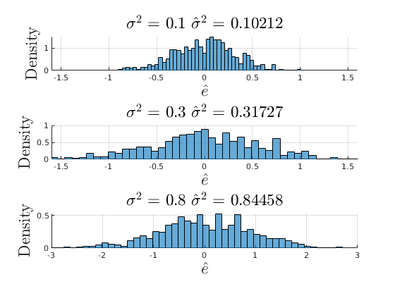
Activity 3: Understanding Collinearity
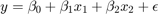 Where 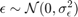
and 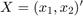 where 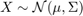 with 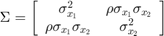
Some Parameters we can play with:
- Number of Samples
- Variance of the error 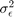
- Variance ofx 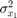
- Correlation
 between 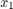 and 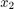
between 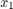 and 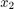
par.names = {'$\sigma^{2}_{\epsilon}$ ','$\sigma^{2}_{x_{1}}$ ','$\rho$ '};
% Data Generating process values:
grids.sigma_e = [0.01,0.3,0.6,1,2.6,3];
grids.sigma_x1 = [0.01,0.1,0.8,1.6,2,2.5];
grids.rho = [0,0.6,0.9,0.95,0.99,1];
% Default Values:
par.n = 100; % Sample size
par.ns = 1000; % Number of Montecarlo Samples
% Simulate x
par.mean_x1 = 20;
par.mean_x2 = 27;
par.variance_x2 = 1.4;
% Model coefficients:
par.beta0 = 2;
par.beta1 = 0.3;
par.beta2 = 1.5;
% Simulate error
err = NaN(par.n,par.ns);
y = NaN(par.n,par.ns);
X = NaN(par.n,2,par.ns);
SE_beta_hat = NaN(par.ns,1);
beta1_hat = NaN(par.ns,1);
mu_beta = NaN(6,3);
mu_SEbeta = NaN(6,3);
% Simulate Data Generating Process:
par. variance_e = grids.sigma_e(2);
par. variance_x1 = grids.sigma_x1(3);
par. rho = grids.rho(1);
for i = 1:3
it = 0;
for ii = 1:6
% Defaults:
if i ==1
par.varianve_e = grids.sigma_e(ii);
par.name_val = par.varianve_e;
elseif i ==2
par.variance_x1 = grids.sigma_x1(ii);
par.name_val = par.variance_x1;
elseif i ==3
par.rho = grids.rho(ii);
par.name_val = par.rho;
end
% Simulate the Correlated Variables
par.big_sigma = [par.variance_x1,sqrt(par.variance_x1)*sqrt(par.variance_x2)*par.rho;sqrt(par.variance_x1)*sqrt(par.variance_x2)*par.rho,par.variance_x2];
for oo = 1:par.ns
% Generate the data
rng((i*100000)+(ii*10000)+oo)
err(:,oo) = 0 + sqrt(par.variance_e).*randn(par.n,1);
X(:,:,oo) = mvnrnd([par.mean_x1,par.mean_x2],par.big_sigma,par.n);
y(:,oo) = par.beta0 + par.beta1.*X(:,1,oo)+par.beta2.*X(:,2,oo) +err(:,oo);
% Estimate OLS
try
vars = ols_esti(y(:,oo),[ones(par.n,1) X(:,:,oo)]);
SE_beta_hat(oo,1) = vars.SEbeta_hat(2);
beta1_hat(oo,1) = vars.beta_hat(2);
catch
if oo ==1
disp('Perfect Colinearity, check your variables!')
end
SE_beta_hat = NaN(par.ns,1);
beta1_hat = NaN(par.ns,1);
end
% Extract Values
end
mu_beta(ii,i) = mean(beta1_hat);
mu_SEbeta(ii,i) = mean(SE_beta_hat);
% Compute and save the mean of the OLS estimator
% Plot the Histograms
if ii == 1|| ii == 3|| ii ==5
it = it+1;
figure(10+i)
subplot(3,1,it)
hold on
histogram(beta1_hat,par.num_bins,'Normalization',opt.norm_type{opt.sel_norm});
xline(par.beta1,'g-','linewidth',2)
xline(mean(mu_beta(ii,i)),'r-','linewidth',2)
ylabel('Density','fontsize',13,'interpreter','latex')
xlabel('$\hat{\beta}$','fontsize',13,'interpreter','latex')
title([par.names{i},' = ',num2str(par.name_val)],'interpreter','latex','fontsize',15)
end
par. variance_e = grids.sigma_e(2);
par. variance_x1 = grids.sigma_x1(3);
par. rho = grids.rho(1);
end
end
Perfect Colinearity, check your variables!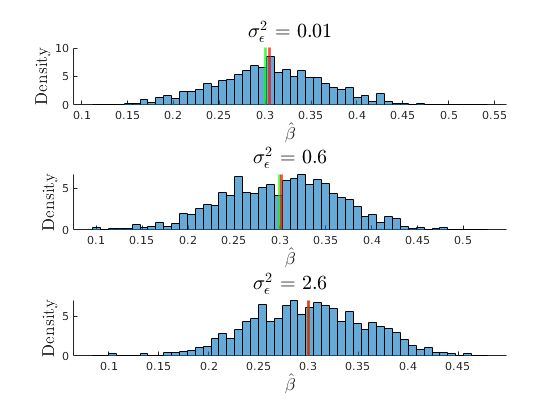 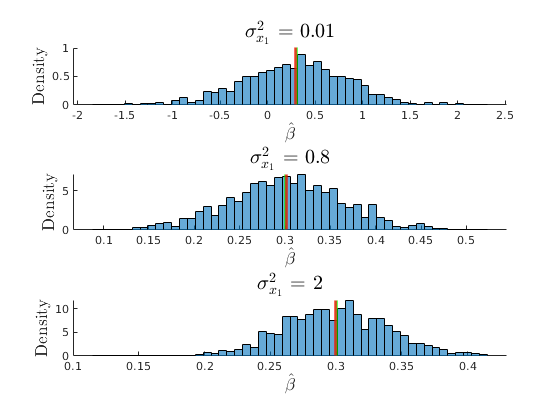 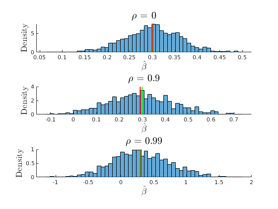
The consequences of collinearity
figure(33) hold on grid on plot(grids.rho,mu_beta(:,3),'ko-','MarkerFaceColor','k','linewidth',1.2) plot(grids.rho,mu_SEbeta(:,3),'mo-','MarkerFaceColor','m','linewidth',1.2) yline(par.beta1,'r') ylabel('$\beta_{1}$','interpreter','latex','fontsize',17) xlabel('$\rho$','interpreter','latex','fontsize',17) legend({'$E(\hat{\beta_{1}})$','$E(SEbeta_{1})$','$\beta_{1}$'},'interpreter','latex','location','best') title('Consequences of Collinearity')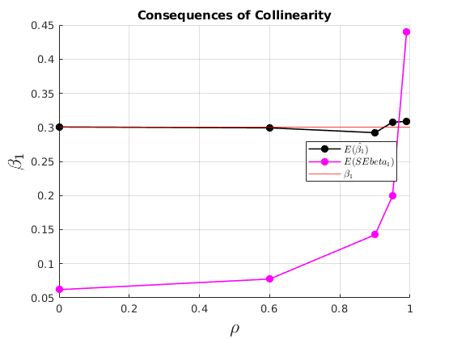
Consequences of not having enough variation for identification
figure(32) hold on grid on plot(grids.sigma_x1,mu_beta(:,2),'ko-','MarkerFaceColor','k','linewidth',1.2) plot(grids.sigma_x1,mu_SEbeta(:,2),'mo-','MarkerFaceColor','m','linewidth',1.2) yline(par.beta1,'r') ylabel('$\beta_{1}$','interpreter','latex','fontsize',17) xlabel('$\sigma^{2}_{x1}$','interpreter','latex','fontsize',17) legend({'$E(\hat{\beta_{1}})$','$E(SEbeta_{1})$','$\beta_{1}$'},'interpreter','latex','location','best') title('Consequences of Low Variance for Identification')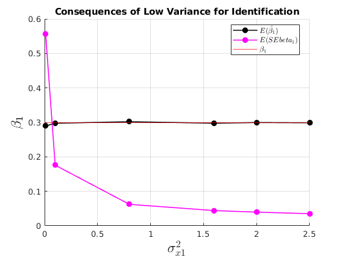
No consequences of having having a larger variance of the error
figure(31) hold on grid on plot(grids.sigma_e,mu_beta(:,1),'ko-','MarkerFaceColor','k','linewidth',1.2) plot(grids.sigma_e,mu_SEbeta(:,1),'mo-','MarkerFaceColor','m','linewidth',1.2) yline(par.beta1,'r') ylabel('$\beta_{1}$','interpreter','latex','fontsize',17) xlabel('$\sigma^{2}_{\epsilon}$','interpreter','latex','fontsize',17) legend({'$E(\hat{\beta_{1}})$','$E(SEbeta_{1})$','$\beta_{1}$'},'interpreter','latex','location','best') title('No Consequence of Larger measurment error')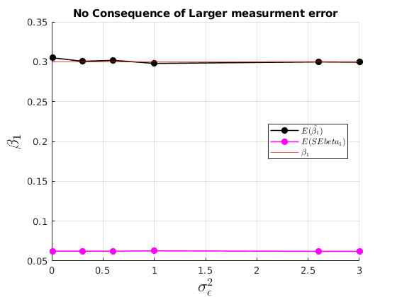
%------------------------------------------------------------------------- % OLS function [vars] = ols_esti(y,X) %{ This function computes the Least Squares Estimate Input: y: Dependent Variable (N,1) X: Independent Variables (N,K) Output: Many stuff you saw in class. %} [par.Nx,par.K] = size(X); % N=no.obs; K=no.regressors [par.Ny] = size(y,1); % if par.Ny~=par.Nx error('X and y do not have same length') end I = rank(X'*X) == par.K; if I ==0 error('Not complete Rank, Perfect Colinearity') end par.N = par.Nx; % Save number of regressots vars.beta_hat = X\y; % Coefficients: vars.beta_hat_alt = inv(X'*X)*(X'*y); % Predicted values: vars.y_hat = X*vars.beta_hat; % Residuals: vars.e_hat = y-X*vars.beta_hat; % Total Variation of the dependent variable vars.SST = (y - mean(y))'*(y - mean(y)); % (SSE) Sum Squared Residuals vars.SSE = vars.e_hat'*vars.e_hat; % SSR/SST or "r-squared" is the ratio of the variation in y explained by the model and the total variation of y vars.R2 = 1 - (vars.SSE/vars.SST); % Adjusted "r-squared". vars.R2A = 1 - (vars.SSE/(par.N-par.K))/(vars.SST/(par.N-1)); vars.sigma2_hat = vars.SSE/(par.N-par.K); %Variance of estimator: vars.var_covar = vars.sigma2_hat*inv(X'*X); vars.SEbeta_hat = sqrt(diag(vars.var_covar)); end